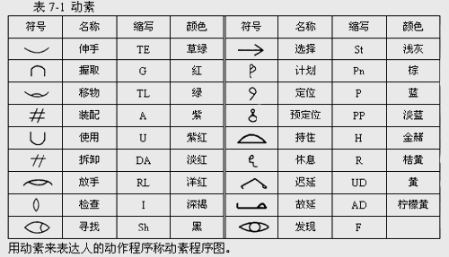

动素的名称、定义及形象符号
基本动作要素的基本思想是吉尔布雷斯奠定的。他认为人所进行的作业是由某些基本动作要素(简称动素或基本动素)按不同方式、不同顺序组合而成的。为了探求从事某项作业的最合理的动作系列，必须把整个作业过程中人的动作，按动作要素加以分解，然后对每一项动素进行分析研究，淘汰其中多余的动作，发现那些不合理的动作。吉尔布雷斯提出了17个动素，组成人的动作的最基本单元。
1．伸手(Transport Empty，用TE表示)
定义：空手移动，伸向目标，又称运空。
起点：当手开始伸出的瞬间开始。
终点：当手刚触及目的物的瞬间终了。
分析：
(1)伸手系指空手。
(2)此动素前常接“放手”，后跟“握取”。
(3)此动素不能取消，但可缩短距离。
(4)移动距离是指动素的实际路径，而非两点间直线距离。
(5)在其他条件不变时，手移动长距离较短距离需要的时间较多。
(6)熟练的操作者在重复性工作的连续周程内，其手的移动几乎经过完全相同的路线。
(7)伸手通常包括下列三种过程：
①由静止开始，加速达最大。
②以后即以此速度等速前进。
③最后减速到完全停止。
(8)手移动时，必须以眼引导手，故眼的移动次数及距离长短，常对操作有影响。
改善：
(1)有否缩短其距离。
(2)能否减少其方向的多变，尤其是突变。
(3)能否使工具物件移向手边。
(4)手移动的种类，按其需时的多少，顺序如下(应选择需时较少的移动)：
①伸手至一固定位置的物件或地点。
②伸手至每次位置均略有变动的物件(此时需用眼寻找)。
③伸手至一堆混杂物中选取，或伸手至甚小的物件。
2．移物(Transport Loaded，用TL表示)
定义：手持物从一处移至另一处的动作称移物，又称运实。
起点：手有所负荷并开始朝向目的地移动的瞬间开始。
终点：有所负荷的手抵达目的地的瞬间结束。
分析：
(1)运送的物件可能为手或手指携带，亦可能由一地点滑送、拖送、推送等。
(2)此动素所需时间，依其距离、重量及移动种类而定，故可缩短距离、减轻重量及改良移动种类，以达到改善。
(3)运实途中常发生“预对”。
(4)此动素前常接“握取”，后跟“对准”及“放手”。
改善：
(1)能否减少其重量。
(2)是否可应用合适的器具，如输送带、容器、盛具、镊子、钳子及夹具等。
(3)是否使用身体的合适部位，如手指、手腕、前臂、肩等。
(4)能否用重力来滑运或坠送。
(5)搬运设备能否用脚来操纵。
(6)是否因物料的搬运或程序的往返，而增加搬动时间。
(7)是否可因增加一小具或放搬运物靠近使用点而取消搬运。
(8)搬运方向的突变是否可以取消，各种阻碍物能否搬去。
(9)常用物料是否己放置于使用点。
(10)是否己用合适的手具、小盒子等，且其操作是否按装配顺序排列。
(11)是否视搬运物的重量，使用身体最合适的部位，而达到最快的搬运速度。
(12)是否有些身体的动作可以取消。
(13)双手的动作能否同时、对称而又反方向。
(14)能否由提送改为滑送。
(15)眼的动作能否与手的动作相协调。
3．握取(Grasp，用G表示)
定义：利用手指充分控制物体。
起点：当手指或手掌环绕一物体，欲控制该物体的瞬间开始。
终点：当物体己被充分控制的瞬间结束。
注意：当物体己被充分控制后的握取称为持住(己不是握取)。
分析：
(1)此动素不能取消，只可改善。
(2)此动素的定义着重点在以手指围绕物，如用任何工具夹物，则不能称为握取。
(3)握取常发生在“运空”与“运实”之间，其后常跟“持住”。
改善：
(1)是否可一次握取多件或减少握取次数。
(2)是否可在容器端开一缺口，以便握取。尤其是较小零件，是否可以改善容器的边缘，以利握取。
(3)工具、物件能否预先放好，以利握取。
(4)前一工位的操作者放下工件的位置以及工具等放置的位置，能否使下一位操作者简化握取。
(5)是否能用其他工具代替手的握取。
(6)工具、物件能否预先放于回转盘内，以利握取。
4．装配(Assemble，用A表示)
定义：为了两个以上的物件的组合而做的动作。
起点：两个物件开始接触的瞬间。
终点：两个物件完全配合的瞬间。
分析：
(1)此动作的改善多于取消。
(2)此动素前常有“对准”或“预对”，后常跟“放手”。
改善：
(1)能否用夹具或固定器。
(2)能否使用自动设备。
(3)能否同时装配数件。
(4)工具是否己达最有效的速度及送进。
(5)是否可用动力工具，以减少装配时间。
5．使用(Use，用U表示)
定义：利用器具或装置所做的动作，称使用或应用。
起点：开始控制工具进行工作的瞬间。
终点：工具使用完毕的瞬间。
分析：
(1)此动素常可获得改善，不但可节省时间，更可节省物料。
(2)在某种操作内，常可连续发生多次的“使用”。
(3)以手代替工具工作时，亦属此动素，如用手裁纸，即属手在“应用”。
改善：同“装配”。
6．拆卸(Disassemble，用DA表示)
定义：对两个以上组合的物体，作分解动作。
起点：两个物体开始分离的瞬间。
终点：两个物体完全分离的瞬间。
注意：尽量使用工具，以减少时间。
分析：
(1)此动素常为改善。
(2)此动素前常为“握取”，后常跟“运实”或“放手”。
(3)此动素所需时间，常与两物体的连接情况及松紧程度有关。
改善：同“装配”。
7．放手(Release Load，用RL表示)
定义：从手中放掉东西，称放手或放开。
起点：手指开始脱离物体的瞬间。
终点：手指完全脱离物体的瞬间。
注意：考虑放手的终点是否为下一动素开始的最佳位置。
分析：
(1)此动素为所有动素需时最少者。
(2)实测时，常与前一动素合并计时。
改善：
(1)能否取消此动素？
(2)能否就在工作完成处放手，用坠送法收集物件？
(3)能否在运送途中放手？
(4)是否必须要极小心的放手？能否避免？
(5)容器或盛具是否经过特殊设计，以便能接纳放手后的物件？
(6)放手后，手或运送的位置是否对下一动作或次一移动最为有利？
(7)能否一次放手多个物件？
8．检查(Inspect，用I表示)
定义：将产品和所制定的标准作比较的动作，叫检查或检验。
起点：开始检验物体的瞬间。
终点：产品质量的优劣被决定的瞬间。
分析：
(1)此动素为眼注视一物，而脑正在判断是否合格。
(2)此动索的重点是心理上的反应。．
(3)检验时，按操作情况需用视觉、听觉、触觉、嗅觉、味觉等器官。
(4)此动素所需时间常因下列因素而定：
①个人的反应快慢；②标准的精确度；③物料的误差；④视力等感官的好坏。
(5)如其它条件相同，则人对声的反应比对光的反应快，而对触觉的反应比对声与光的反应更快。人对声的反应时间为0.185s：人对光的反应时间为0.225s；人对触觉的反应时间为0.175s。
改善：
(1)能否取消或与其他操作合并？
(2)能否同时使用多种量具或多用途的量具？
(3)增加亮度或改善灯光的布置是否可减少检验的时间？
(4)检验物与检验者眼睛的距离是否合适？
(5)检验物的数量是否足够采用电动自动检验？
9．寻找(Search，用Sh表示)
定义：确定目的物的位置的动作。
起点：眼睛开始致力于寻找的瞬间。
终点：眼睛找到目的物的瞬间。
分析：
(1)新手及不熟练者此动素较多，训练有素及工作熟练者，则费时极少。
(2)如工具、零件、物料各有定所，工作现场布置合适，则此动素费时极少。且此亦为取消此动素的最有效的方法。
(3)如能取消此动素为好。
(4)操作愈复杂，愈需记忆，愈不稳定，或物件愈精细时，此动素费时愈多。
改善：
(1)物件给予特别标示(用标签或涂颜色)。
(2)良好的工作场所布置。
(3)是否需要特殊的灯光。
(4)物件、工具有固定位置，并放置于正常工作范围内。
(5)操作人员应培训，使之成为习惯性的动作，而取消此动素。
10．选择(Select，用St表示)
定义：在同类物件中，选取其中一个。
起点：寻找的终点即为选择的起点。
终点：物件被选出。
分析：
(1)实用上常将“寻找”与“选择”合并来计时。
(2)物件愈精细，规格愈严格，此动素的时间愈长。
(3)物件分类放置，避免混杂在一起，以及有效的现场布置，常可取消此动素。
改善：
(1)是否可取消此动素？
(2)工具物件能否标准化和互换使用？
(3)能否改善安排，而使选择较容易或可以取消？
(4)能否当前一操作完毕时，即将零件(物料)放于下一操作的预放位置？
(5)能否涂上颜色，以利选择？
11．计划(Plan，用Pn表示)
定义：在操作进行中，为决定下一步骤所做的考虑。
起点：开始考虑的瞬间。
终点：决定行动的瞬间。
分析：
(1)此动素完全为心理的思考时间，而非手的动作时间。
(2)操作中由于操作者的犹疑，即发生此动素。
(3)操作愈熟练，此动素时间愈短。
改善：
(1)是否可以改善工作方法，简化动作？
(2)是否可改善工具、设备，使操作简单容易？
(3)操作人员是否己培训，使其熟练而减少或消除此动素？
12．定位(Position，用P表示)
定义：将物体放置于所需的正确位置为目的而进行的动作，又称对准。
起点：开始放置物体至一定方位的瞬间。
终点：物体己被安置于正确方位的瞬间。
分析：
(1)此动素前常为移动、后常跟“放手”。
(2)很多情况此动素常可能发生在“运实”途中。
(3)此动素所需时间常按下列情形而定：
①对称的物件，或任何方向均可放置的物件，需时最少。
②半对称的物件，即能有数个位置可以放置，需时较对称物件多，较不对称物件少。
③不对称物件，仅有一个位置可以放置，需时最多。
改善：
(1)是否必须对准？
(2)能否用量具以利对准？
(3)松紧度能否放宽？
(4)手臂能否有依靠，使手能放稳而减少对准的时间？
(5)物件的握取是否容易对准？
(6)能否利用脚操作的夹具？
13．预定位(Pre-position，用PP表示)
定义：物体定位前，先将物体安置到预定位置。
起点：与定位的起点、终点相同。
分析：
(1)此动素常与其他动素混合在一起，最常见的情况是与“运实”一起发生。
(2)所谓预对，必须能将物件放置于合适的位置上，方便以后的再行取用。如将用完的笔，放置于倾斜竖起的笔架上，此处宜用“预对”，因为下次从笔架上拿笔时，就能握取使用时的位置。
(3)可以利用夹持工具或特设容器，使物件保持应用时的姿势，以利握取时即己成为使用时的姿势。
改善：
(1)物件能否在运送途中预先对正？
(2)工具的设计是否能使放下后的手柄保持向上，以利下次使用？
(3)工具能否悬挂起来，以便一伸手即可拿到？
(4)物体的设计能否使每一面(边)均相同？
14．持住(Hold，用H表示)
定义：手握物并保持静止状态，又称拿住。
起点：用手开始将物体定置于某一方位的瞬间。
终点：当物体不必再定置于某一方位上为止的瞬间。
分析：
(1)此动素常发生在装配工作及手动机器的操作中，前为“握取”，后为“放手”。
(2)手绝对不是有效的持物工具，而是成本最贵的夹持工具。
(3)应设法利用各种夹具来代替手持物。
(4)能否于操作中取消此动素？
改善：
(1)能否用夹具来持物？
(2)能否运用摩擦或粘着力？
(3)能否应用磁铁？
(4)如持住不能取消，则是否己设“手靠”、“手垫”以减轻手的疲劳？
15．休息(Rest，用R表示)
定义：因疲劳而停止工作。
起点：停止工作的瞬间。
终点：恢复工作的瞬间。
分析：
(1)此动素所需时间的长短，视工作性质及操作者的体力而定。
(2)此动素通常都在工作周期中发生。
(3)改善工作环境及动作等级可减少或消除此动素。
改善：
(1)肌肉的运用及人体动作的等级是否合适？
(2)温度、湿度、通风、噪声、光线、颜色以及其他工作环境是否合适？
(3)工作台的高度是否合适？
(4)操作者是否坐立均可？
(5)操作者是否有高度合适的座椅？
(6)重物是否用机械装卸？
(7)工作时间长短是否合适？
16．迟延(Unavoidable Delay，用UD表示)
定义：不可避免的停顿。
起点：开始等候的瞬间。
终点：连续开始工作的瞬间。
分析：
(1)当程序发生故障或中断时，即为迟延。
(2)由于程序的需要，而等待机器或他人的工作，或等待检验、待热、待冷等。
改善：
此动素的发生非操作者所能控制，必须在管理及工作方法上作某些改善。
17．故延(Avoidable Delay，用AD表示)
定义：可以避免的停顿。
起点：开始停顿的瞬间。
终点：开始工作的瞬间。
分析：
(1)这是由于操作者的疏忽而产生的，可以避免。
(2)如能建立一个有工作意愿、有纪律、有效率的工作团体，此动素即可避免。
改善：
(1)改善管理方法、规章、制度、政策，使操作者毫无抱怨。
(2)改善工作环境，提供一个合适、健康、愉快而有效的生产现场。
(3)改善工作方法，降低劳动强度等。
18．发现(Find，用F表示。这个动素是美国机械工程师学会增加的)
定义：东西己找到的瞬间动作。
起点：眼睛开始寻找到物体的瞬间。
终点：眼睛己找到物体的瞬间。
动素还可以用形象图案(符号)、颜色等方法表示，如表7-1所示。
